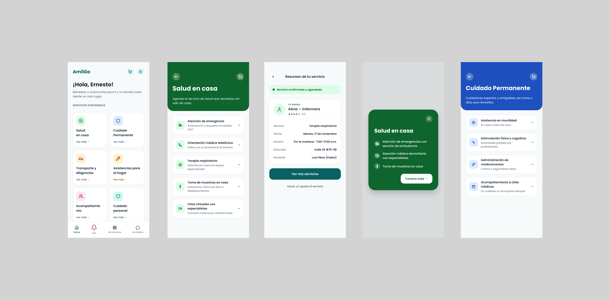

Seeds
UX Design, 2020

UX Design, 2020
Arati had sketched out three early "seeds" of a wellness ecosystem for older adults in Colombia, a life-mentorship app, an in-home services app, and a collective-buying-power benefits card. None of them had been tested with real users. The target audience skews toward low digital literacy and low trust in online tools, so it wasn't clear which, if any, of the three concepts would actually work.
We ran 36 in-depth interviews across Bogotá, Medellín, and Barranquilla, testing all three low-fidelity prototypes with older adults and their adult children. The same patterns surfaced everywhere, a strong preference for WhatsApp and phone calls over app self-service, and distrust of digital payments. We translated those patterns into six required attributes, namely familiarity, simplicity, flexibility, trust, omnichannel, and closeness. We used them to reshape three disconnected apps into one integrated model built around levels of autonomy.
The research reframed three unvalidated concepts into one adaptable ecosystem spanning five life areas, directly shaping the next design phase.